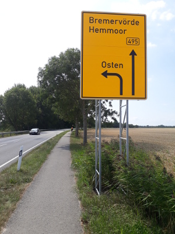

Radtour von Kiel nach Hamminkeln
Vorbereitung
Wir wollen mit unseren beiden Kindern die Strecke von Kiel nach Hamminkeln mit dem Fahrrad erarbeiten. Unser Plan sieht vor, Campingplätze anzufahren und vor Ort die jeweils vorhandenen gastronomischen Möglichkeiten, sprich Bäckereien für morgens und Restaurants oder Imbisse fürs Abendbrot zu nutzen, so dass wir keine Lebensmittel und Kochutensilien mitführen müssen.
Für den Streckenverlauf haben wir uns bei Naviki eine Route angeschaut und mit der Route bei Google Maps im Radfahrmodus verglichen. Wir wollen möglichst direkt fahren, aber wegen der Kinder auf langweilige Bundesstraßen oder Straßen ohne Radweg verzichten. Das hat nicht immer funktioniert. Alternativ hätten wir schöne aber weitere Wege nutzen müssen, was wir wegen der anhaltenden Sommerhitze vermieden haben.
Mit der Android App von camping.info war es uns möglich, auch offline Campingplätze entlang der Route zu finden. Während der Tour haben wir dann hauptsächlich mit Google Maps navigiert. Das Smartphone wurde dabei entweder mittels Solarzelle auf der einen Lenkertasche nachgeladen oder durch 4 Mignonbatterien in einem USB Halter. Nachladen war auf den Campingplätzen meist nur in den Waschräumen möglich. Einmal hatten wir eine Bäckerei, die tatsächlich eine Steckdose im Verkaufsraum hatte.
Der 9jährige muss die Strecke mit seinem 24 Zoll Falter 7 Gang Rad selber bewältigen, während das 20 Zoll Rad der 7jährigen mit einer Follow Me Tandemkupplung mit einem Elternrad verbunden ist. Somit konnten wir an ihrem Rad ebenfalls zwei Fahrradtaschen montieren. Neben den jeweils zwei Radtaschen am Erwachsenenrad und den darauf befestigten wasserdichten Packtaschen haben wir genügend Stauraum für unser Tipi Zelt ohne Boden, vier Schlafsäcken, vier Isomatten, Regenbekleidung, Ersatzwäsche etc.
Den zusätzlichen Kauf von Lowridern für das Vorderrad konnten wir uns damit ersparen.
Für die erste Übernachtung kommen der Camping Treff in Dägeling bei Itzehoe, der DKV Kanuverein Itzehoe und das Fährhaus Hodorf in Frage. Beim Campingplatz geht niemand ans Telefon, den Kanuverein haben wir angemailt, und das Fährhaus antwortet auf unsere Email-Anfrage recht schnell. Abends kommt dann noch eine Rückmeldung vom Kanuverein, so dass wir beim Fährhaus absagen, denn der Kanuverein liegt günstiger auf der geplanten Route.

Unsere Reisekonfiguration.
21.07.2018 - 75km - Kiel Holtenau - Itzehoe
Aller Anfang ist schwer
Um 10 Uhr sind wir (2 Erwachsene und 2 Kinder 9 und 7 Jahre) in Kiel-Holtenau gestartet. Der erste Weg führt uns direkt zur örtlichen Tankstelle, um die Reifen mit dem nötigen Luftdruck zu versorgen. Ein Fehler, wie sich später noch herausstellen wird.
Danach geht es runter an den Nord-Ostsee-Kanal und an dessen Nordufer auf den schmalen Betonspuren entlang bis zur Fähre Landwehr. Dort setzen wir über und folgen der Straße nach Quarnbek und dann weiter nach Achterwehr, Felde und westlich am Westensee entlang. Dort gibt es dann zum ersten Mal eine etwas merkwürdige Radwegeführung, die einem klar macht, dass man als Radfahrer nur Verkehrsteilnehmer zweiter Klasse ist und möglichst häufig von der Straße verdrängt und auf obskure Sand- und Schotterwege gehört.
Egal, wir fahren durch Groß Vollstedt und Eisendorf bis nach Nortorf. Dort biegen wir ab und genehmigen uns wegen der hohen Temperaturen erst einmal ein Eis. Gestärkt geht es dann durch Gnutz und Aukrug. Danach hört der Radweg plötzlich auf, und wir müssen auf die Fahrbahn. An einer viel befahrenen Landstraße mit Kindern ist das kein Vergnügen. An der Itzespitze, die direkt neben der Landstraße zwischen Aukrug und Hennstedt liegt und die höchste Erhebung im Kreis Steinburg markiert, machen wir kurz Pause und tragen uns ins "Gipfelbuch" ein.
Ab Hennstedt gibt es auch wieder einen Radweg. Weiter durch Lockstedt und Hohenlockstedt kommen wir zur B206, die uns kurz vor Itzehoe noch mit einer langanhaltenden Steigung ärgert.
Ziemlich fertig kommen wir um 17:00 am Kanuclub an. Eine halbe Stunde vorher haben wir uns beim Bootshauswart angemeldet, es sind aber auch schon Vereinsmitglieder am Platz, so dass wir sofort unser Zelt aufbauen können. Freundlicherweise werden wir dort von grillenden Vereinsmitgliedern zu Grillwurst und Salat eingeladen, so dass wir nicht mehr aufs Rad müssen. Super! Danke nochmals an den Kanuverein Itzehoe. Es war super bei Euch!
Fazit: Die Etappe war durch die hohen Temperaturen und das hügelige Streckenprofil mit 75km zu lang für unseren 9jährigen.
22.07.2018 - 48km - Itzehoe - Hechthausen
Eine Fähre versprochen, zwei gefahren
Um 8:30 haben wir schon alles wieder eingepackt und den Kanuverein verlassen, so dass wir schon um 9 Uhr vier Plätze im Cafe Phaenomenon belegen, um zu frühstücken. Auch der heutige Tag verspricht heiß und trocken zu werden. Die heutige Strecke soll kürzer als die gestrige sein, so dass wir den Ferienpark Geesthof in Hechthausen als Ziel anpeilen. Außerdem soll es die gestern versprochene aber nicht eingelöste Pizza geben. Die Fähre Glückstadt-Wischhafen soll das heutige Highlight werden.
Nach Planung und Frühstück sind wir wieder auf dem Rad unterwegs durch Kremperheide, Krempermoor, Krempe, Krempdorf bis zum Fähranleger Glückstadt. Wir rollen an den Autos vorbei direkt nach vorne und dürfen sofort auf die Fähre. Unsere Tandemkonstruktion wird freundlicherweise als ein Rad bewertet, und so kommen wir für 9,50€ über die Elbe.
Auf der Elbe von Glückstadt nach Wischhafen.
In Wischhafen rollen wir an 1km wartenden Autos vorbei bis zu Gül Grillhaus, und dort gibt es endlich die Pizza. Als das Personal feststellt, dass wir mit dem Rad unterwegs sind, gibt es noch eine gut gekühlte Flasche Cola für lau. Danke!
Auf unserem Weg kommen wir durch Osten und flugs folgen wir den Schildern zur dortigen Schwebefähre. Wir nutzen diese für 10 Euro und lassen uns die Seltenheit dieses Wasserüberquerungsgefährtes vom Fährschiffer erläutern.

Wenn man von Norden nach Süden fährt, liegt Osten natürlich links.
Durch Basbek und Bornbek kommen wir nach Klint und dort direkt zum Ferienpark Geesthof mit dazugehörigem Badesee. Den See sehen wir schon vor der Ankunft und freuen uns auf ein kühles Bad. Erst gilt es aber, an der Rezeption schwitzend die Anmeldung zu erledigen und das Zelt auf der Zeltwiese aufzubauen. Dort steht schon ein Tipi von einem dortigen Reitlehrer, Mitarbeiter und Freizeitindianer, der uns am nächsten Morgen auch direkt zum Kaffee einladen wird.
Der See ist super, und super ist es auch, dass der Campingplatz ein Restaurant hat, so dass wir nicht mehr weiter müssen. Der Geesthof wäre auch ein Platz für mehrere Nächte, leider wollen oder müssen wir weiter.
23.07.2018 - 62km - Hechthausen - Waakhausen
Döner schmeckt gut
Es ist wieder warm und sonnig. Langsam fragen wir uns, warum wir eine Radtasche voll mit Regenjacken und -hosen befördern. Am Campingplatz hatten wir uns für heute ein paar Brötchen bestellt, und die essen wir vor dem Start.
Der Weg führt uns durch Kranenburg immer an der Oste entlang. Autos sehen wir kaum, und wir kommen gut voran. Die Ostendorfer Straße führt uns schnurgerade durch Ostendorf nach Niederochtenhausen und weiter bis nach Bremervörde. Dort gibt es die Möglichkeit, die Wasserflaschen zu tauschen, und auch eine Eisdiele.
Wir fahren weiter durch Spreckens, Fahrendorf, Gnarrenburg, Langenhausen bis nach Barkhausen. Dort wollen wir etwas zu Mittag essen, aber auch nicht viel Zeit vertrödeln. Die Empfehlung einer hilfsbereiten Passantin führt uns zu "Tigris Döner Saal", wo unser Sohn den ersten Döner seines Lebens bekommt. Noch ein Gericht, wa ihm gut schmeckt.
Weiter durch Dahldorf, Findorf, Nordsode, Ostersode, Hüttenbusch, Überhamm, Weyerdeelen bis nach Worpswede. Dort angekommen sind wir schon ziemlich ausgedörrt, und der örtliche Verkehr geht uns auf den Senkel. Von dem in zahlreichen Berichten gepriesenen, beschaulichen Künstlerdorf bekommen wir nichts mit, und wir beeilen uns, hier weg zu kommen. Da unser Tagesziel aber nache ist, biegen wir nach Westen ab Richtung Waakhausen. Dort rollen wir auf den Campingplatz, der sich als DKV Kanustation entpuppt.
In Waakhausen lassen wir zum ersten Mal die Spitze des Tipis weg. Regen ist weit und breit nicht in Sicht.
Es gibt einen Kiosk mit Softdrinks, Bier, Chips und Erdnüssen, und so sieht dann auch unser Abendbrot aus. Da es auch ein Pfadfinderstützpunkt ist, haben wir eine Feuerschale, die wir auch benutzen dürfen. Die Kinder sind also glücklich und halten das Feuer den ganzen Abend in Gange. Leider gibt es keinen Badesee, aber eine kalte Dusche reicht auch.
24.07.2018 - 59km - Waakhausen - Dötlingen
Erste Panne, schnelle Hilfe
Was soll ich sagen: Der Sommer will keine Pause machen, und wir werden heute die 37 Grad im Schatten erreichen, allerdings ohne Schatten, was ja dank der Solarzellen für die Smartphoneversorgung und damit Navigation nicht schlecht ist.
Wir starten am Campingplatz und fahren schnurgerade nach Lüningsee. Wir sind auf der Suche nach einem Frühstücksbäcker. Durch Frankenburg geht es nach Lilienthal. Dort suchen wir Bäcker Rolf auf. Der hat alles, was wir brauchen: Brötchen, Kaffee, kalte Getränke.
Weiter geht es über die Wümme und dann auf einem schnurgeraden Radweg - vermutlich eine ehemalige Bahntrasse - wunderschön mit Sicht auf dem Fallturm der Uni Bremen in Richtung Innenstadt.
Der schnurgerade Radweg nach Bremen.
Dort verfransen wir uns aber irgendwann wegen der Vollsperrung des Radwegs, irgendwie schaffen wir es schließlich doch zum Hauptbahnhof und finden auch die Bremer Stadtmusikanten. Die Kinder sind wegen deren Größe erwartungsgemäß enttäuscht, finden aber den schattigen Platz beim nächsten McDonalds super.
Für einen ausgedehnten Stadtbummel ist es einfach zu heiß.
Hitze und Städte vertragen sich nicht, und so verlassen wir Bremen über Huchting in Richtung Delmenhorst, welches wir südlich umfahren. Unser heutiger Campingplatz lockt mit einer Bademöglichkeit. Nach Havekost und Hengsterholz führt uns der Weg leider ziemlich beschissen an einer stark befahrenen Bundesstraße. Wir sind froh, endlich nach Hockensberg abbiegen zu können.

Unser schlimmster Streckenabschnitt. Pannenstreifen einer Bundesstraße
Die Freude ist von kurzer Dauer. In Dötlingen gibt es einen Knall und mein Lenker befindet sich 3cm tiefer. Der Schlauch des Vorderreifens hat keine Lu[s|f]t mehr. Eigentlich kein Problem: Wir haben ja Werkzeug und Flickzeug dabei. Also schnell den Mantel abgehoben. Upps ein Riesenloch in der Nähe eines Speichenloches aber dort kein Fremdkörper im Mantel. OK. Schnell vulkanisiert, 5 Minuten gewartet, Flicken drauf, 5 Minuten gewartet, eingebaut, aufgepumpt. Pssssst! Scheiße! Noch ein Loch oder der Flicken hält nicht. Zweiter Versuch. Gleiches Ergebnis. Die Laune sinkt.
Nur noch 3.7km bis zum Campingplatz, aber bei der Hitze latschen und Rad schieben ist kein Vergnügen. Das Smartphone zeigt "Frank Frerichs Fahrradtechnik" in 1km Entfernung. Unsere Rettung. Die Leute dort haben das gleiche Humorlevel wie wir, und die schauen sich den Schaden an. Laut ihrer Aussage lassen sich heutige Schläuche eh kaum flicken und bei den Temperaturen schon gar nicht. Also gibt es nach Diagnose ein neues Felgenband, einen neuen Schlauch, einen Flicken in den Mantel, wo sich schon ein Gegenstand durchgestanzt hatte, und auf meinen Wunsch einen Ersatzschlauch. Außerdem dürfen wir dort Wasser auffüllen. Perfekter Service, den wir auch mit einem Trinkgeld belohnen. Vielen Dank nochmals.
Der Ursprungsfehler lag bei mir. Wenn ich den Vorderreifen nicht wie gewohnt auf 5 bar aufgepumpt hätte, dann hätte sich der Schlauch bei der durch die Hitze höheren Druck nicht seinen Weg Richtung Felge suchen müssen und wäre bei heilem Felgenband nicht geplatzt.
Wir erreichen mit einer Stunde Verspätung den Campingplatz Aschenbeck, bauen dort unser Tipi auf und legen uns in den nahen Badesee. Eigentlich ein 1m tiefer Fischweiher aber bei der Hitze ist das auch egal. Abends gibt es auf dem Campingplatz Schnitzel mit Pommes und Pizza. Alles wieder gut.
25.07.2018 - 82km - Dötlingen - Haselünne
Wir hassen Bundesstraßen
Der nächste Campingplatz ist etwas weit entfernt, so dass wir heute eventuell eine Pension oder ein Hotel brauchen könnten. Bei der Hitze aber auch kein Vergnügen. Mal sehen, wie die Kinder durchhalten.
Wir rollen früh vom Campingplatz und steuern die erste Bäckerei an: Brockshus Ulf Landbäckerei und Konditorei in Dötlingen. Dort kriegen wir alles, was der Radler zum Frühstück braucht.
Google Maps hat bisher zuverlässig funktioniert bis zu einer Stelle, wo es uns unbedingt an einem Maisfeld entlang führen möchte, obwohl es einen besseren asphaltierten Wirtschaftsweg gibt. Also zurück. Kurz danach gibt es den nächsten Radschaden. Die Klammer des Follow Me am Kinderrad hat sich wohl durch die Hitze gedehnt und löst sich. Wir bemerken das aber noch früh genug, weil plötzlich das Vorderrad mitdreht. Wir befestigen die Schelle neu, aber zu fest dürfen wir sie auch nicht anziehen, denn wenn das Spannband reißen sollte, wäre die Tour gelaufen und wir müssten den nächsten Bahnhof ansteuern.
Wir fahren durch Ahlhorn und Bethen bis nach Cloppenburg. Dort gibt es ein Eis zur Mittagszeit. Wir wollen der nervigen Bundesstraße eigentlich nicht weiter folgen, was zu einem Umweg über Molbergen nach Latrup führt. Danach kommt Löningen. Hier hätte die Etappe von der Entfernung her enden können, aber die Kinder sind noch fit und wir versuchen es also weiter bis zum Campingplatz zu schaffen.
Nach Herzlake schaffen wir es noch bis zum Heinz Richard Holt Comfort Camping direkt an der Hase gelegen mit einem Badesee bei Haselünne. 82km stehen auf dem Tacho, und wir beiden Erwachsenen sind ziemlich fertig, während die Kinder nach kurzer Zeltaufbaupause entweder auf die Hüpfburg oder zum See wollen. Der See gewinnt erst einmal. Der 9jährige hat sein Trauma vom ersten Tag überwunden und hat keine Sorge mehr vor langen Etappen.
Am Campingplatz gibt es ein Restaurant und genügend kalte Getränke für alle. Die Hüpfburg ist dann abends auch noch mal dran.
26.07.2018 - 52km - Haselünne - Schüttorf
Blöde Bundesstraße
Wir wachen früh auf und können nicht umhin, noch einmal in den Badesee zu springen. Wir sind dort heute fast alleine. Unser heutiges Tagesziel soll Schüttorf werden, und wir wollen dort möglichst ohne Umwege hin.
Nach dem Frühstück in Haselünne am Marktplatz führt uns eine Brückensperrung vom direkten Weg ab und wir müssen einer langen Umleitung folgen. Wir wollen mittags in Lingen sein und so folgen wir notgedrungen der B203. Beim Edeka in Bawinkel tauschen wir unsere Wasserflaschen und teilen uns eine Cola, wegen der Elektrolyte.
Kurz vor Lingen treffen wir auf einen E-Biker, kommen mit ihm ins Gespräch, und er führt uns zur besten Eisdiele Lingens. Nach einem Milkshake geht es gestärkt erst am Kanal entlang, dann auf der Schüttorfer Straße am AKW bei Hanekenfähr vorbei über die Ems durch Elbergen, Bernte, Leschede, Emsbüren bis nach Schüttorf zum Camping am Quendorfer See. See klingt nach Bademöglichkeit, und genau das ist dort möglich. Der Campingplatz hat uns auf der Zeltwiese einen schattigen Platz zugewiesen, und am See gibt es direkt ein Restaurant für den abendlichen Besuch. Teuer aber gut. Nach ausgedehnten Badefreuden, einem üppigen Essen sowie kühlen Getränken kriechen wir spät abends in die Sommerschlafsäcke.

Luft 36°C, Wasser 27°C, Bier 6°C
27.07.2018 - 57km - Schüttorf - Gescher
Es ist heiß
Wir sind schon bei brütender Hitze aufgewacht und nach Schüttort hineingerollt. Die Klammer am Follow Me hat sich noch einmal gelöst. Diesmal wird sie etwas fester angeknallt und auch etwas höher montiert, so dass das Vorderrad höher kommt.
Google führt uns über einsame Straßen ohne viel Autoverkehr Richtung Ochtrup. Fast zu schön, um wahr zu sein. Ist es dann auch. Erst kommt ein Schild: "Nur für Forstverkehr", dann stehen wir vor einem Zaun. Ein großes Munitionsdepot genau auf der Grenze zwischen Niedersachsen und NRW. Mist! Zurück oder weiter? Google hält die Straßen im Depot für befahrbar. Sind sie auch, nur nicht für uns. Wir gehen direkt am Zaun entlang, wo ein Wanderweg markiert aber selten begangen ist. Nach einiger Zeit kommen wir an einem Tor an, wo wir klingeln und nach dem Weg fragen. Man erklärt uns den Weg nach Ochtrup, und plötzlich ist er auch wieder ausgeschildert.
Im Aldi in Ochtrup ist mittlerweile das Wasser in 1.5Liter Flaschen ausverkauft. Als am wenigsten schreckliche Alternative klingt Zitrone Ingwer. Das Zeug stellt sich aber als gesüßt heraus und ist damit eher ungenießbar. In Ahaus besuchen wir das Eiscafe Venezia, wo die Plörre durch Leitungswasser ersetzt wird.
Nach Ahaus kommt dann Stadtlohn, und in Gescher erreichen wir unseren Campingplatz Brinkmanns Hof in der Mittagshitze. Der Platzwart ist noch nicht da, und so halten wir uns an den Rat eines Gastes im angeschlossenen Biergarten: "Tu Dich ersma einen trinken, Jung."
Nachdem wir unseren Zeltplatz auf einer schattigen Wiese zugewiesen bekommen haben, fahren wir ins nahe gelegene Freibad, um uns abzukühlen. Super bei der Hitze!
Abends gibt es dann für jeden etwas im Campingplatzrestaurant, und zum Tagesabschluss legen wir uns auf die Zeltwiese, um nach der ISS und der grandiosen Mondfinsternis Ausschau zu halten.
28.07.2018 - 45km - Gescher - Hamminkeln
Endlich da
Vom Campingplatz fahren wir erst einmal nach Gescher zum frühstücken. Als wir die Bäckerei verlassen, sieht der Himmel ziemlich dunkel aus. Plötzlich fängt es an zu regnen, und wir stellen uns bei Edeka Eismann für eine halbe Stunde unter.
Wasserflecken auf dem Weg. Der erste Regen seit Wochen.
Das Ziel vor Augen werden wir richtig flott. Ruckzuck sind wir in Velen und fahren durch Ramsdorf und Borken. Kurz vor Rhede biegen wir nach Süden ab und erreichen um 14 Uhr unser Endziel in Hamminkeln.
Fazit
480km in 8 Tagen: mit Kindern kein schlechter Schnitt. Es war angenehm und unkompliziert auf Campingplätzen zu übernachten. Kein Platz war überfüllt. Die Platzdichte dürfte aber höher sein. Hotels, Gasthöfe und Pensionen haben wir nicht benötigt. Dort hätten wir nachts wahrscheinlich noch mehr geschwitzt als im Zelt. Die Regenausrüstung haben wir nicht gebraucht. Anstelle von Flickzeug sollte man lieber Ersatzschläuche einpacken. Google Maps eignet sich mittlerweile zur Fahrradnavigation, führt einen aber häufig an stark befahrene Straßen. Eine Fahrradkarte gehört immer noch ins Gepäck. In Schleswig-Holstein gibt es kaum asphaltierte Wirtschaftswege. Das ist in Niedersachsen und NRW angenehmer. Bremen ist toll für Radfahrer geeignet.
Google Maps
Naviki Radtourenplaner
Itzehoer Kanu-Club
Camping Ferienpark Geesthof
Campingplatz Waakhausen im Teufelsmoor
Campingplatz Aschenbeck in Dötlingen
Campingplatz Comfort Camping in Haselünne
Campingplatz Quendorfer See in Schuettorf
Seerestaurant Else am See
Campingplatz in Gescher
|